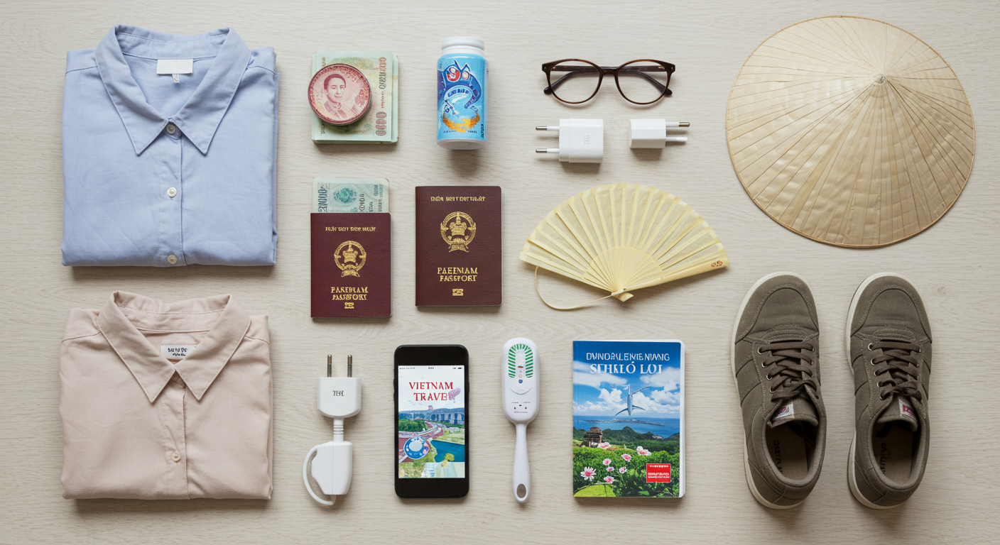

베트남 여행 준비물 체크리스트

베트남 여행을 계획하고 계신가요? 완벽한 여행을 위한 필수 준비물과 출국 전 체크리스트를 준비했습니다.
출국 전 필수 체크사항
여행 서류
-
여권
- 잔여 유효기간 6개월 이상
- 여권 사본 별도 보관
-
비자
- 15일 무비자 입국 가능
- 15일 이상 체류 시 비자 필요
-
여행자보험
- 의료비 보장 확인
- 보험증서 사본 준비
필수 준비물
-
현금 및 카드
- USD 환전 (깨끗한 지폐)
- 해외사용 가능 신용카드
- 현금은 100달러 이상 추천
-
전자기기
- 돼지코 어댑터 (220V)
- 보조배터리
- 카메라
-
상비약
- 소화제
- 해열제
- 반창고
- 모기약
계절별 준비물
건기 (11월-4월)
- 얇은 긴팔 옷
- 자외선 차단제
- 선글라스
- 모자
우기 (5월-10월)
- 우산 또는 우비
- 방수 가방
- 방수 신발
- 갈아입을 옷
지역별 추가 준비물
-
해변 지역 (다낭, 나트랑)
- 수영복
- 비치타올
- 물놀이 용품
-
산악 지역 (사파)
- 등산화
- 방한 옷
- 우비
-
도시 지역 (하노이, 호치민)
- 편한 신발
- 에코백
- 휴대용 선풍기
유용한 앱
-
Grab
- 차량 및 오토바이 호출
- 음식 배달
-
Google Maps
- 오프라인 지도 다운로드
- 대중교통 정보
-
Google Translate
- 베트남어 번역
- 오프라인 사전 다운로드